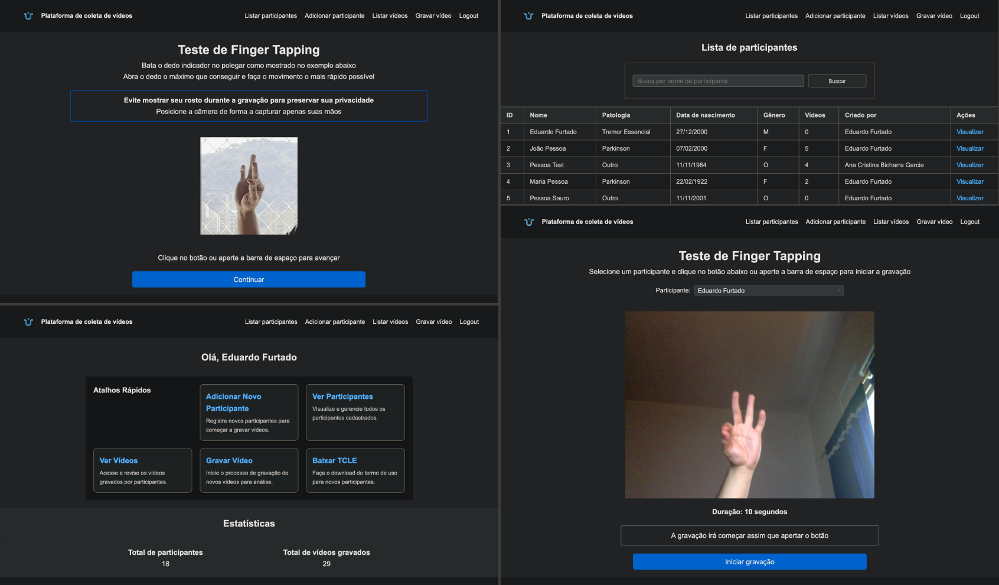

Academic research
Hand tremor diagnosis from video
During my master’s at the Federal University of the State of Rio de Janeiro, I studied how AI could help clinicians assess hand tremors from short videos.

Video-based diagnosis
Tremors are involuntary, rhythmic muscle contractions leading to shaking movements in one or more parts of the body, more commonly the hands. Early diagnosis of tremors is crucial, as it can significantly improve the management and treatment outcomes for patients, potentially slowing the progression of underlying neurological conditions.
My work involved conducting a comprehensive literature review on existing AI methodologies for tremor diagnosis, which I presented at the International Conference on Agents and Artificial Intelligence (ICAART) 2024, available at this DOI. The review focused on diagnosis using simple video sources, such as a webcam, making it easier and cheaper to deploy without the need for expensive equipment like sensors or 3D cameras. One of the key challenges in this field is the scarcity of large, publicly available datasets, as most data are privately held and limited in size.
Measuring finger taps
For my research, I obtained a dataset of finger-tapping videos, a popular task used by clinicians, from a group of researchers working at a hospital. Although their methodology was available in their paper, they did not share the code they used. Therefore, I replicated their approach in Python, creating the code to clean the dataset, extract features from the videos, and train a deep learning model using TensorFlow. I incorporated additional data augmentation techniques and introduced new statistical features. To further improve the model, I implemented cross-validation and used the t-test to check the statistical significance of the new results compared to the original methodology. These enhancements led to a statistically significant improvement in the model's F1 score, demonstrating the potential for improved diagnostic accuracy.

Recording clinical tasks
To support future studies, I also developed a web platform using Python and Streamlit. This platform enables doctors to record videos of patients performing hand tasks, facilitating the monitoring of tremor progression over time. By maintaining a detailed history for each patient, this tool not only aids doctors in their clinical assessments but also helps collect a valuable dataset that can be used to train better models.
